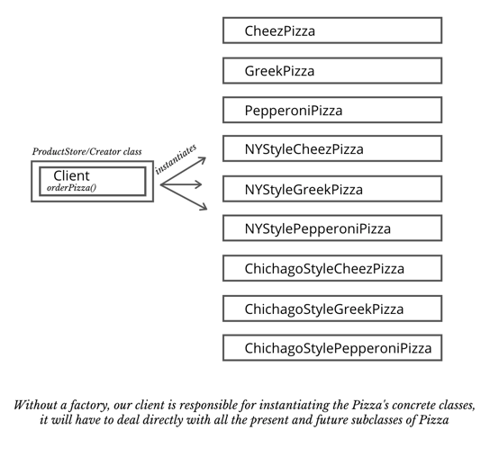
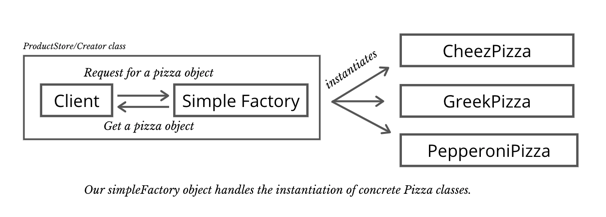
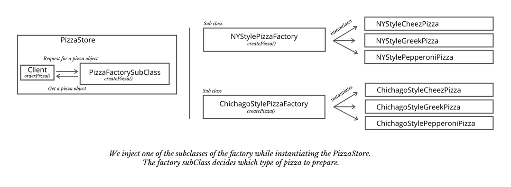
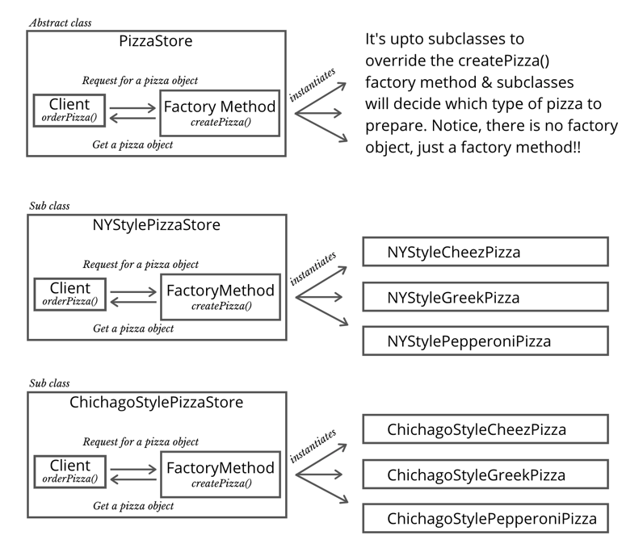

Factory & the Abstract Factory Design Pattern
VARIATIONS: Simple Factory | Factory Method | Abstract Factory
In our code we use a lot of different objects. We have classes and we instantiate objects from the classes and use them in a bunch of different ways. We have to instantiate objects from our classes at some point or the other in the program.
An example client code (PizzaStore.orderPizza()) without a factory:

When you have code that instantiates concreate classes, this is an area of frequent change.
Without a simple factory, our client code could look something like this. Remeber, our application may have many such places where the decision needs to be made at runtime about which variation of pizza to instantiate:
function orderPizza(type) {
let pizza;
if (type == "cheese") {
pizza = new CheesePizza();
} else if (type == "greek") {
pizza = new GreekPizza();
} else if (type == "pepperoni") {
pizza = new PepperoniPizza();
} else if (type == "calm") {
pizza = new CalmPizza();
} else if (type == "veggie") {
pizza = new VeggiePizza();
}
pizza.prepare();
pizza.bake();
pizza.cut();
pizza.box();
return pizza;
}
Factory method says, let's encapsulate the code that create objects, so that we can make the object creation process uniform across all places. You can use the factory, whenever you want to instantiate and the factory is responsible for instantiating appropriately.
We can use "factories" that allows you to encapsulate the behaviour of instantiation. By placing all the creation code in one object or method, you avoid duplication in your code and provide one place to perform maintenance.
The client code, depend only upon the interfaces our factory provides, rather than the concrete classes required to instantiate the objects.
It makes sense when the instantiation is very complex & needs computation & some kind of business logic to determine what parameters you want to pass through this particular object. Maybe there are variations of object and you need some business logic to determine which variation of the object do you need to construct.
Benifits
- Avoids duplication
- One place for maintenance
- Decouple object creation from is usage
- Expose a smaller surface are to client
When to use Factory Pattern:
- When our Object or component setup involves a high level of complexity
- When we easily need to genrate different instances of objects on the environment we are in
- When we are working with many small objects or component that share the same properties
- When composing objects with instances of other objects that need to only satisfy an API contract to work.
Real world example
Knex is a SQL query builder that supports multiple databases. Its package exports just a function, which is a factory. The factory performs various checks, selects the right dialect object to use based on the database engine, and finally creates and returns a knex object.
There are three variations of the factory pattern:
Simple Factory
Simple factory simply means that we have a ConcreteCreator that creates a ConcreteProduct. There are no shared interfaces for Procucts or Creators.
Factory Method
We have all four actors involved in the Factory Method pattern: Product, ConcreteProducts, Creator & ConcreteCreators.
Abstract Factores
An Abstract factory aims to encapsulate a group of individual factories with a common goal.
You know that, if your code is written to an interface, then it will work with any new classes implementing that interface through polymorphism. However, when you hava a code that makes use of lot's of concreate classes, you are looking for trouble because that code may have to be changed as new concreate classes are added. In other words your code will not be "closed for modification". To extended your code with new concreate types, you will have to re-open it.
Let's start exloring the simple factory first:
Here's a very good example from the Oreilly's, head first design patterns book.
The Simple Factory
Many developers argue that the simple factory isn't actually a design pattern. But in my very humble opinion, it is a very useful pattern and has all the glory to qualify as a simple design pattern.
PS: In case you are preparing for an interview, and they happen to ask you about the Simple Factory, tell them that it is a very useful programming idiom but not a pattern 😏
Following are the actors involved in a simple Factory:
The client/creator/store: In our example, the client is going to be PizzaStore's orderPizza() method. This piece of code will be using our factory.
The factory: In our example, the factory is going to be SimplePizzaFactory object. We use the createPizza() method of our simple factory to create pizza's. It is the only part of our application that refers to the concrete pizza classes.
The product: The product of our factory is pizza. We have defined Pizza as an abstract product class with some helpful implementations that can be overridden.
the concrete products: CheezePizza, VeggiePizza, CalmPizza etc are going to be our concrete product classes. Each product class needs to extend the Pizza class. and as long as that's the case, it can be created by the factory and handed back to the client.
In A simple factory, you need to be able to do something similar to the following at the client side:
// client code:
let pizza_store_one = new PizzaStore(new SimplePizzaFactory());
pizza_store_one.orderPizza("cheese");
- You instantiate a
PizzaStoreand pass in (inject) our pizza factory object. - You invoke the
orderPizza()[our client] method of the pizzaStore and pass in a variation of pizza. - the orderPizza invokes the
createPizza()method of the factory object that we injected and it returns back a pizza object back to the client.
A visual representation of our simple factory looks something like this: 
In other words, in the client code, we replace an ugly if..else statement of multiple new keywords with a simple argument. Beautiful!!
Product (abstract) class
Pizza (abstract) class with some default implementations:
class Pizza {
constructor(pizzaName = 'default pizza', dough = 'default dough', sauce = 'default sauce', toppings = []) {
let default_topping = ['default topping1', 'default topping2'];
this.pizzaName = pizzaName;
this.dough = dough;
this.sauce = sauce;
this.toppings = [...default_topping, ...toppings];
}
prepare() {
console.log(`Preparing ::: ${this.pizzaName} with ${this.toppings.join(' ,')}`);
}
bake() {
console.log(`Baking for 25 minutes at 350`);
}
cut() {
console.log(`Cutting the pizza into diagonal slices`);
}
box() {
console.log(`Placing pizza in official Pizzastore box`);
}
getName() {
return this.pizzaName;
}
}
Product concrete classes:
class CheesePizza extends Pizza {
constructor(pizzaName = 'Plain Cheeze Pizza', dough, sauce, toppings = ['Extra Cheeze']) {
super(pizzaName, dough, sauce, toppings);
}
}
class NYStyleCheesePizza extends Pizza {
constructor(pizzaName = 'NY Style Plain Cheeze Pizza', dough = "thin chrust", sauce, toppings = ['some Cheeze']) {
super(pizzaName, dough, sauce, toppings);
}
cut() {
console.log(`Cut the cheezy pizza in NY Style.`);
}
}
class ChichagoStyleCheesePizza extends Pizza {
constructor(pizzaName = 'Chichago Style Plain Cheeze Pizza', dough = "thick chrust", sauce, toppings = ['lots of Cheeze']) {
super(pizzaName, dough, sauce, toppings);
}
}
class GreekPizza extends Pizza {
constructor(pizzaName = "Plain Greek Pizza", dough = "Greek dough", sauce = "Greek sauce", toppings = ["Greek spices"]) {
super(pizzaName, dough, sauce, toppings);
}
}
class NYStyleGreekPizza extends Pizza {
constructor(pizzaName = "Newyork Greek Pizza", dough = "Greek dough", sauce = "Greek sauce", toppings = ["Greek spices", "Some Cheeze"]) {
super(pizzaName, dough, sauce, toppings);
}
}
class ChichagoStyleGreekPizza extends Pizza {
constructor(pizzaName = "Chicago Greek Pizza", dough = "Greek dough", sauce = "Greek sauce", toppings = ["Greek spices", "Lot's of Cheeze"]) {
super(pizzaName, dough, sauce, toppings);
}
}
class PepperoniPizza extends Pizza {
constructor(pizzaName = "Plain Pepperoni Pizza", dough, sauce = "Peeper sauce", toppings = ["Peeper"]) {
super(pizzaName, dough, sauce, toppings);
}
}
class NYStylePepperoniPizza extends Pizza {
constructor(pizzaName = "NY Style Pepperoni Pizza", dough, sauce = "Peeper sauce", toppings = ["Peeper"]) {
super(pizzaName, dough, sauce, toppings);
}
}
class ChichagoStylePepperoniPizza extends Pizza {
constructor(pizzaName = "Chichago style Pepperoni Pizza", dough, sauce = "Peeper sauce", toppings = ["Peeper"]) {
super(pizzaName, dough, sauce, toppings);
}
}
Based on type of pizza (runtime), we instantiate the correct concrete class. This code is not closed for modification. If the pizza store changes it's pizza offerings, we will have to modify it. Clearly, the logic of selecting the concrete class to be instantiated, is preventing our orderPizza() method from being closed for modificaiton.
Let's extract the oject creation logic to a separate factory object:
A Simple Factory class
class SimplePizzaFactory {
createPizza = function (pizzaType = "cheese") {
let pizza;
if (pizzaType == "cheese") {
pizza = new CheesePizza();
} else if (pizzaType == "greek") {
pizza = new GreekPizza();
} else if (pizzaType == "pepperoni") {
pizza = new PepperoniPizza();
}
return pizza;
}
}
Next, we need to some how inject this factory to our pizza store. We can either use a method like setFactory() or pass it in as a constructor. In any case we need a property in the PizzaStore class for a factory.
function PizzaStore(factory) {
this.factory = factory;
}
In the orderPizza() method we need to invoke the createPizza() method (#1) of the factory to build a pizza object of our choice.
let pizza = this.factory.createPizza(type);
ES6 classes variation of the PizzaStore may look something like this now.
Creator class (client/store)
class PizzaStore {
constructor(factory) {
this.factory = factory;
}
orderPizza = function (type) {
let pizza = this.factory.createPizza(type);
pizza.prepare();
pizza.bake();
pizza.cut();
pizza.box();
return pizza;
}
}
Finally our client code would look as simple as this:
let pizza_store_one = new PizzaStore(SimplePizzaFactory);
pizza_store_one.orderPizza("pepperoni");
The visual representation of the simple factory pattern will hopefully make much more now:
With the Simple Factory, we try to abstract the creation details of the product from our caller. The only thing our caller (client code) knows, by calling a method and passing the desired parameter, it returns an object of type Pizza. But, how the pizza is created is encaplulared away from the client.
So, whenever you see there are chances of creating many instances of product and the product creation requires some conditions/logic, we may go for a Simple Factory.
The complete source code the example can be found here
Simple factory - with multiple factory subclasses.
We, can further orgaize a simple factory, by making our factory a (kind of abstract) class & letting it's subclasses decide how to make pizza's
If we take out SimplePizzaFactory and create three different factories - NYPizzaFactory, ChicagoPizzaFactory and CaliforniaPizzaFactory -- then we can just compose the PizzaStore with the appropriate factory and a franchise is good to go.
The visual representation may look something like this: 
Factory Subclasses (concrete factories that extends Factory)
class NYStylePizzaFactory extends SimplePizzaFactory {
constructor() {
super();
}
createPizza = function (pizzaType = "cheese") {
let pizza;
if (pizzaType == "cheese") {
pizza = new NYStyleCheesePizza();
} else if (pizzaType == "greek") {
pizza = new NYStyleGreekPizza();
} else if (pizzaType == "pepperoni") {
pizza = new NYStylePepperoniPizza();
}
return pizza;
}
}
class ChicagoPizzaFactory extends SimplePizzaFactory {
constructor() {
super();
}
createPizza = function (pizzaType = "cheese") {
let pizza;
if (pizzaType == "cheese") {
pizza = new ChichagoStyleCheesePizza();
} else if (pizzaType == "greek") {
pizza = new ChichagoStyleGreekPizza();
} else if (pizzaType == "pepperoni") {
pizza = new ChichagoStylePepperoniPizza();
}
return pizza;
}
}
Usage (Client Code)
let pizza_store_one = new PizzaStore(new NYStylePizzaFactory);
pizza_store_one.orderPizza("cheese");
The complete source code of this expample can be found here
Factory Method
In Simple Factory, the Concrete Product Creator is instantiated with a separate factory object.
But, in the factory method, the Concrete Product Creator extends a class that has defined a createProduct() method. It's upto the concrete Creator Classes to implement/override the behaviour of the createProduct() factory method.
The Factory Method pattern defines an interface for creating objects (creator abstract class) , but lets subclasses of the (concrete crators) decide which class (of product) to instantiate. Factory method lets a class defer instantiation to subclasses.
Abstract Creator class gives you an interface with a method for creating objects, also known as the factory methtod. Any other methods implemented in the abstract Creator are written to operate on products produced by the factory method. It's upto the subclasses (concrete creators) to implement or override the factory method and make their product of choice.
Creator class is written without knowledge of the actual products that will be created, because the pattern allows subclasses themselves to decide, which product subclasses to use to create the product.
Actors in the Factory Method Pattern:
- Abstract Creator
- factoryMethod()
- other_methods_that_may_use_the_created_product()
- Concrete Creator
- factoryMethod()
- Abstract Product
- Concrete Product
All products must implement the same interface so that the classes that use the products can refer to the interface and not the concrete class. We are docoupling the creation of a product from its use
Each frachise, of our PizzaStore might want to offer different styles of pizzas, depending on where the franchise store is located. For example one franchise wants a factory that makes NY-style pizzas: thin crust, tasty sauce and just a little cheeze. Another franchise wahts a factory that makes Chicago-style pizzas: thick crust, rich sauce and tons of cheese.
A factoryMethod handles object creation and encapsulates it in a subclass. This decouples the client code in the superclass from the object creation code in the subclass
The visual representation of the Factory Method Pattern may look something like this:

So, the first step of refactoring could be to use our factory class as an (abstract) class and create a few subclasses that extends our simpleFactory class.
Concrete factories (subclasses that extends simpleFactory)
Here in the factory subclass, we decide which product subclass to use for making Pizza.
class NYStylePizzaFactory extends SimplePizzaFactory {
constructor() {
super();
}
createPizza = function (pizzaType = "cheese") {
let pizza;
if (pizzaType == "cheese") {
pizza = new NYStyleCheesePizza();
} else if (pizzaType == "greek") {
pizza = new NYStyleGreekPizza();
} else if (pizzaType == "pepperoni") {
pizza = new NYStylePepperoniPizza();
}
return pizza;
}
}
class ChicagoStylePizzaFactory extends SimplePizzaFactory {
constructor() {
super();
}
createPizza = function (pizzaType = "cheese") {
let pizza;
if (pizzaType == "cheese") {
pizza = new ChichagoStyleCheesePizza();
} else if (pizzaType == "greek") {
pizza = new ChichagoStyleGreekPizza();
} else if (pizzaType == "pepperoni") {
pizza = new ChichagoStylePepperoniPizza();
}
return pizza;
}
}
Next step could be to, convert our PizzaStore to an (abstract) class. Move the createPizza() factory method as an abstract method in the PizzaStore class. So, now the createPizza() is back to being a call the a method in the PizzaStore rather than on a factory object.
(Abstract) Creator class with an abstract factory method
class PizzaStore {
// Client: This method is not required to be overridden; It just uses the pizza that the createPizza - factory method - returns
// here it doesnot know what will it get back, it depends on the implementation of createPizza by it's subclasses
// that's its important that all the pizza (product) implement a common interface
orderPizza = function (type) {
let pizza = this.createPizza(type);
pizza.prepare();
pizza.bake();
pizza.cut();
pizza.box();
return pizza;
}
// instead of injecting a factory object we have this abstract method here which could be overridden by the subclasses of the PizzaStore.
createPizza = function (pizzaType = "cheese") {
let pizza;
if (pizzaType == "cheese") {
pizza = new CheesePizza();
} else if (pizzaType == "greek") {
pizza = new GreekPizza();
} else if (pizzaType == "pepperoni") {
pizza = new PepperoniPizza();
}
return pizza;
}
}
Now we have got an abstract store, waiting for subclasses. We are going to have a subclass for each regional type (NYPizzaStore, ChicagoPizzaStore & CaliforniaPizzaStore) and each subclass is going to make the decision about what makes up a pizza. We will let each subclass of Pizza Store define what the createPizza() method looks like.
So, we'll have a number of concrete subclasses of PizzaStore, each with it's own pizza variations, still making use of the well tested orderPizza() method.
Concrete Creators :: subclasses that extends PizzaStore
// NYPizzaStore extends PizzaStore, so it inherits the orderPizza() method.
class NyStypePizzaStore extends PizzaStore {
constructor() {
super();
}
// orderPizza() : the orderPizza() method in the superclass has no clue which Pizza we are creating; it just knows it can prepare, bake, cut and box it.
// overridding/implementing just the createPizza() method
createPizza = function (pizzaType = "cheese") {
let pizza;
if (pizzaType == "cheese") {
pizza = new NYStyleCheesePizza(); // instantiating the region specific pizza.
} else if (pizzaType == "greek") {
pizza = new NYStyleGreekPizza(); // instantiating the region specific pizza.
} else if (pizzaType == "pepperoni") {
pizza = new PepperoniPizza();
}
return pizza;
}
}
class ChichagoStypePizzaStore extends PizzaStore {
constructor() {
super();
}
// overridding just the createPizza() method
createPizza = function (pizzaType = "cheese") {
let pizza;
if (pizzaType == "cheese") {
pizza = new ChichagoStyleCheesePizza(); // instantiating the region specific pizza.
} else if (pizzaType == "greek") {
pizza = new ChichagoStyleGreekPizza(); // instantiating the region specific pizza.
} else if (pizzaType == "pepperoni") {
pizza = new PepperoniPizza();
}
return pizza;
}
}
Usage :: client code
let ny_pizza_store_one = new NyStypePizzaStore();
ny_pizza_store_one.orderPizza("greek");
The complete sourcecode of the above example could be found here
Abstract Factory
Abstract Factory offers the interface for creating a family of related products, without explicitly specifying their concrete classes.
Abstract factory allows a client to use an abstract interface to create a set of related products without caring about the concrete products that are actually produced. In this way, the client is decoupled from any of the specifics of the concrete products.
Often, the methods of an Abstract factory are implemented as factory methods.
| Factory Method | Abstract Factory |
|---|---|
| Uses classes | Uses objects |
| creates object through inheritance | creates object through composition |
| extend a class and provide an implementation for a factory method | provides an abstract type, subclasses of these types define how those products are produced. To use factory you instantiate one and pass it into some code that is written against the abstract type |
| creates just one product, so needs just one method | It's interface has to change if new products are added |